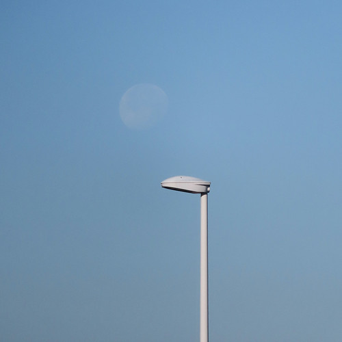
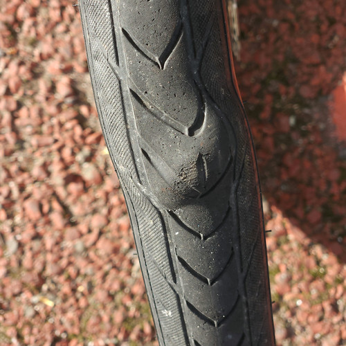
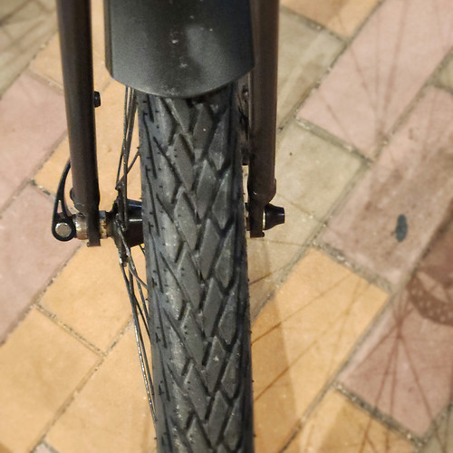
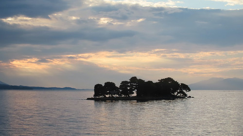

前輪パンク→タイヤごと交換しました

三連休以来久しぶりに晴れたかなぁ，という感じ。 明日はまた雨予報なので，走り溜めしておくことにした。
見上げれば満月過ぎの月が朧に見える。

風もなく，宍道湖も穏やかなものである。
こりゃあ幸先いいわ，と午前中の用事を済ませて西方面に走ったのだが，前輪から妙な振動が伝わり始めた。 クイックリリースが緩んでるわけでもないし，スポークが折れてるわけでもない。 で，タイヤをチェックしてみたら大変なことに。

こりゃあヤバいとゆっくり引き返し始めたのだが，既に遅し。 「ブシュー」という派手な音とともに見事にパンクした。
10秒ほど途方に暮れたあと，気を取り直してロードサービスに電話。 30分ほど待って赤帽さんが来てくれた。 赤帽さんなんだ。
自転車はいつもの自転車屋さんに運んでもらい，私も店へ移動した（今のロードサービス契約では運んでもらう車には同乗できない）。 予想通りチューブ交換では済まず，タイヤごと交換することになった。 昨年後輪タイヤを交換したときと同じものである。

本来なら昨年の冬のオーバーホールで交換する予定だったのが骨折入院で狂ってしまったからなぁ。
よく保ったほうだとは思う。
それにしても，節約したいときに限ってお金が出ていく。
とほほ orz
朝はあんなに晴れてたのに夕方は曇り。

明日は雨予報。 お出かけ予定があるのだがなぁ…